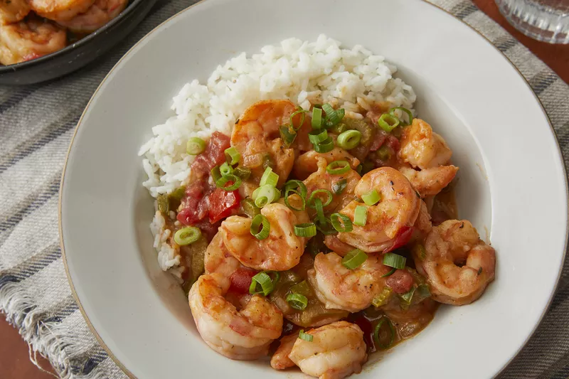

Home
Shrimps

Description
Ingrediants
Steps
- You really can make simple seafood recipes during the busy work week! We picked 30 of our favorite quick and easy shrimp recipes, all ready in 30 minutes or less.
- To make the prep even easier, check the grocery store for raw shrimp that are already peeled and deveined. And if you can't find raw, pre-prepped shrimp, don't discount frozen shrimp.
- They'll cook up tastier than the market's already-cooked shrimp.
- If you are using frozen, however, don't miss Chef John's quick tricks for frozen shrimp, with smart tips for making frozen shrimp taste as good as fresh shrimp just plucked from the sea.
Chef John's 22 Best Shrimp Recipes
From Hawaiian-inspired garlic shrimp tp cajun Favorites, Southern staples, and Italian and Spanish classics-they're all here!
Home